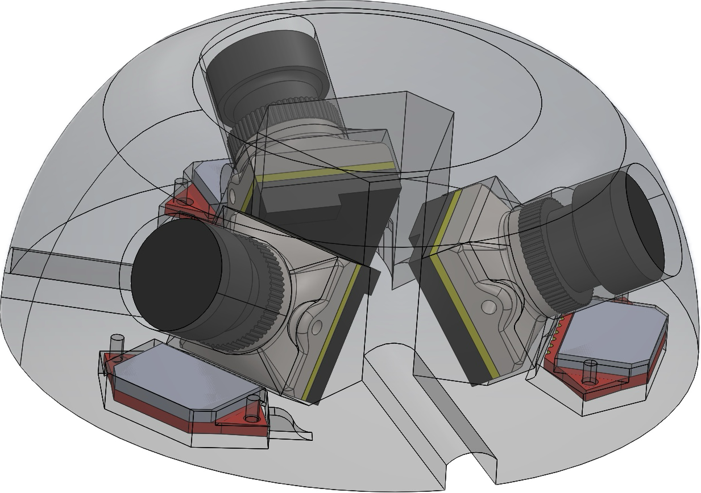
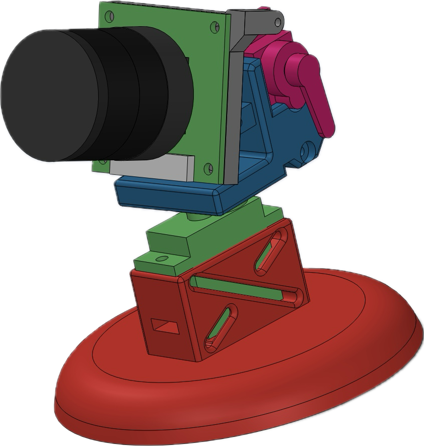
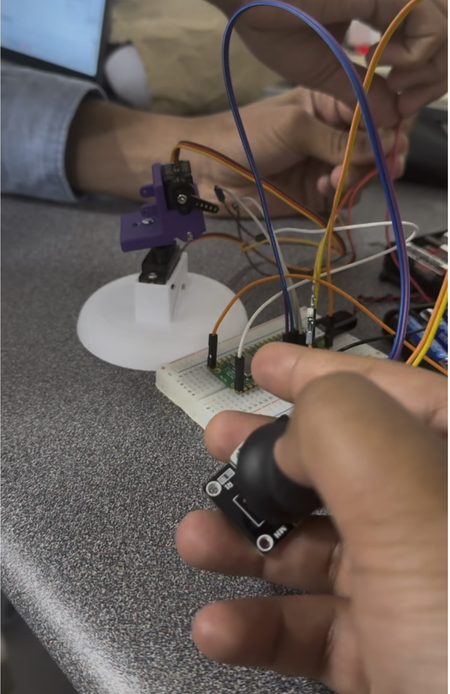
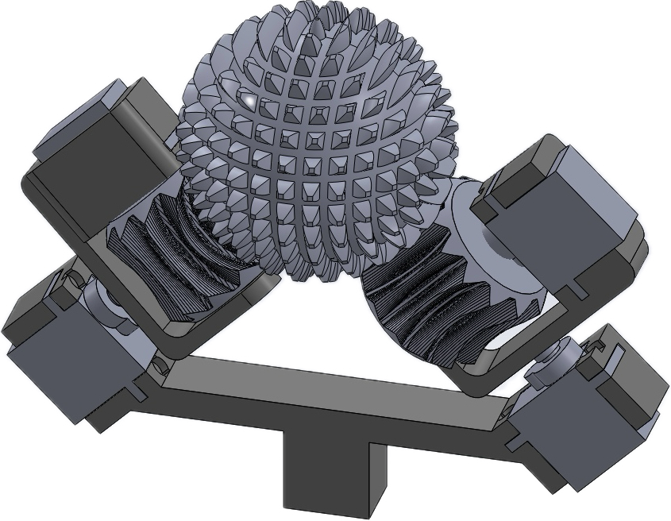

Research project · Clemson University SPRI
Modular sensor suites for environmental monitoring
Three interchangeable camera concepts designed for use aboard unmanned aerial and terrestrial vehicles during environmental-hazard monitoring and research.
- Role
- Research intern and designer
- Focus
- Mechanical design, cameras, and embedded systems
- Platforms
- M500 development drones and LEO rovers
- Tools
- CAD, 3D printing, Raspberry Pi, and bench testing

01
The problem
Environmental researchers need broad visual coverage, but existing integrated camera platforms can be expensive and difficult to adapt across different vehicles.
My goal was to develop a lightweight and modular system that could move between drones and ground rovers. Rather than committing to one mechanism immediately, I developed three approaches with different levels of complexity: a fixed panoramic module, a conventional gimbal, and an experimental active ball joint.
02
Concept one
Static panoramic module

The simplest concept used multiple fixed cameras to provide overlapping fields of view. With no moving components, the design reduced mechanical complexity and created a system that was easier to manufacture, repair, and operate.
This approach traded active camera positioning for immediate coverage in several directions. It also provided a useful baseline for comparing the added value of the moving concepts.
03
Concept two
Two-axis gimbal


The gimbal used two small servos to aim a single camera. Compared with the static module, it required more control hardware but reduced the number of cameras needed and allowed an operator to inspect a particular area.
Building and testing this version exposed practical issues that were less visible in CAD, including cable routing, servo range, power delivery, and keeping the camera stable while the mechanism moved.
04
Concept three
ABENICS active ball joint

The most ambitious concept adapted the ABENICS spherical-gear principle into a camera mount. Four servos actuated a compact ball joint, allowing a single camera to point through a much broader range than a conventional two-axis mechanism.
This design offered the greatest theoretical coverage, but it also introduced tighter tolerances, more difficult fabrication, and a substantially more complicated control problem. It served as the project’s experimental option rather than the simplest deployable solution.
05
Results and tradeoffs
The work reduced the estimated cost of wide-area visual coverage from roughly $15,000 for a commercial integrated platform to about $300 across the three prototype approaches.
The static and gimbal systems were bench-tested successfully. The lower cost came with clear compromises, particularly lower image resolution and shorter transmission distance than the commercial reference system.
More importantly, the project showed that one universal camera mount was not necessarily the best answer. A modular interface allowed the vehicle and research team to choose the appropriate balance of coverage, complexity, weight, and cost for each mission.